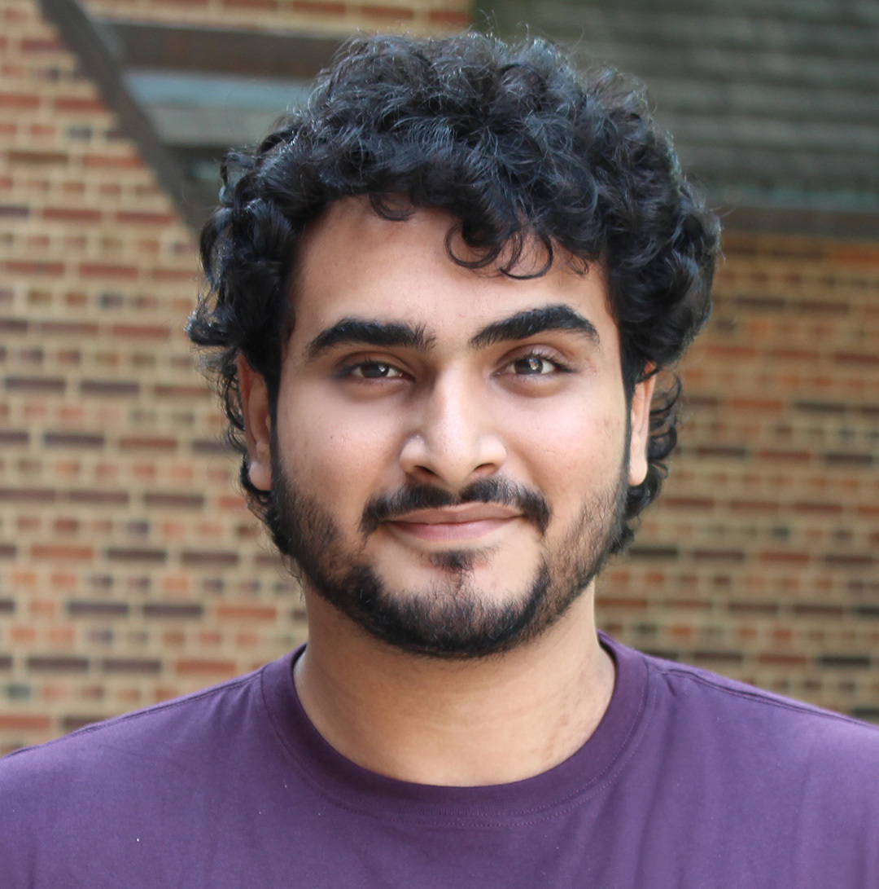

Organisers
We are excited about the organisation committee of this workshop with expertise in diverse fields. Together, the organisers have a history in a variety of topics including human-robot interaction, natural language processing, conversational user interfaces, dark patterns, multi-modal communication, as well as pervasive and persuasive technologies. Below, we would like to introduce each co-organisator individually.
Nima Zargham is a postdoctoral researcher in the Digital Media Lab at the University of Bremen. His research focuses on human-centered approaches for designing speech-based systems that elicit desirable user experiences. Nima has previously organized CUI-related workshops at notable conferences such as ACM/IEEE HRI 2023, ACM CUI 2023, ACM CUI 2024, and ACM CHI 24. Additionally, he served as a local chair at the ACM CHI-PLAY 2022 conference. His research efforts have resulted in publications featured in prestigious HCI venues, including CHI, CUI, and CHI-PLAY.

Mateusz Dubiel is a research associate in the Department of Computer Science at the University of Luxembourg, where he works on developing and evaluating conversational agents. Specifically, his current research focuses on assessing the cognitive and usability implications of interfaces that feature speech and exploring their potential to inspire positive behavioral change in users. He served as Short Papers Chair for CUI '22 and was one of the General Chairs for CUI '24.
Smit Desai is a postdoctoral researcher in the College of Art, Media and Design at the Northeastern University, Boston. His primary research focus centers around comprehending the mental models of users as they engage with conversational agents, utilizing innovative research techniques such as metaphor analysis. He leverages this valuable insight to advance the development of conversational agents in diverse social roles, including educators and storytellers. His research has yielded publications in esteemed HCI forums like CHI, TOCHI, CSCW, and CUI.

Thomas Mildner a postdoctoral researcher at the Digital Media Lab at the University of Bremen. His research focuses on ethical and responsible design and online wellbeing with studies exploring so-called dark patterns in social media as well as conversational technologies. To this end, Thomas collaborated to develop an ontology for dark patterns. His research is published in venues including CHI, DIS, and CUI.
Hans-Joachim Belz is a freelance user researcher and designer with over 30 years of experience designing, implementing, and managing digital products across various industries. From 2014 to 2024, he held a teaching position in ``Mobile Commerce'' at DHBW Mannheim (Baden-Wuerttemberg Cooperative State University). In 2020, his focus shifted to voice automation. In addition to his consultancy work in conversational AI, he employs Ethnomethodology and Conversation Analysis (EMCA) to study the expanding conversational capabilities of voice and multimodal user interfaces.